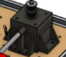
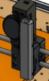

Choix technique mécanique

Support moteur
Le choix de concevoir des supports moteurs sur mesure répond à une double exigence de rigidité structurelle et d'optimisation des pièces. Plutôt que de dupliquer un modèle unique aux quatre coins de la machine, nous avons choisi de développer deux variantes adaptées à leur fonction mécanique précise.
Deux de ces supports intègrent un logement évidé et des perçages dédiés pour brider fermement les moteurs pas-à-pas. À l'inverse, les deux autres adoptent une face supérieure pleine afin de servir exclusivement de points d'ancrage rigides pour les vis et les roulements à billes.
L'intégration d'empreintes cylindriques ajustées au diamètre extérieur des axes rectifiés garantit un parallélisme parfait, une condition indispensable pour verrouiller la première dimension de dessin.

Support axe rectifié
Ces pièces sont essentielles au bon fonctionnement du système : elles garantissent un coulissement fluide des axes et maintiennent l'alignement du stylo, même lors de déplacements rapides.
Nous avons notamment conçu des élévateurs de roulements pour améliorer la rigidité et la fluidité de la transmission. Ces élévateurs permettent de créer deux niveaux de passage distincts pour les courroies, évitant qu'elles ne se croisent et limitant les frottements.
Pour la liaison avec les tiges transversales, nous avons intégré des inserts filetés via des perçages spécifiques, garantissant une stabilité totale de la structure lors des mouvements.

Support stylo
Le chariot mobile est la pièce maîtresse de notre système cinématique. Conçue en deux parties suivant une géométrie en miroir, sa forme a été ajustée au diamètre des axes rectifiés pour garantir un coulissement parfait, fluide et sans jeu mécanique.
Ce bloc central assure ainsi la stabilité nécessaire au tracé tout en maintenant la tension optimale des courroies. De plus, il intègre une extension spécifique pour le montage du servomoteur, permettant de piloter la mobilité verticale du stylo via un système de crémaillère.
Pour accueillir l'outil, cette pièce centrale intègre un module porte-stylo amovible avec deux perçages ajustés pour un stylo bille standard. Ce système de fixation rapide permet un montage simple et interchangeable.

Support switch
Le choix de concevoir un support sur mesure pour notre switch de fin de course répond à une contrainte majeure d'intégration mécanique et de gestion de l'espace. La principale exigence lors de sa modélisation a été de penser son implantation pour qu'il ne gêne absolument pas les déplacements des supports de tiges sur les axes XY.
Ce choix technique permet de positionner le capteur de manière extrêmement précise en bout de course, tout en garantissant qu'aucune pièce mobile ne vienne butter accidentellement contre lui ou détériorer son câblage lors des phases d'impression.

Support planche
Le choix de concevoir des brides de fixation en forme de coins répond à un besoin essentiel de modularité, de précision et de rapidité d'utilisation pour notre espace de travail. Plutôt que de coller ou de visser définitivement la planche en bois découpée au laser sur le châssis, nous avons développé ces supports spécifiques pour assurer un maintien à la fois ferme et amovible. Fixées solidement au cadre de la machine par des vis traversantes, ces pièces épousent parfaitement les angles de la plaque en bois pour la verrouiller contre tout déplacement ou vibration mécanique lors des phases de dessin.
Sur le plan fonctionnel, la géométrie en coin a été minutieusement calculée pour intégrer une double glissière. Ce choix technique permet de faire coulisser la planche en bois dans son logement lors du montage, tout en laissant un jour extrêmement fin en surface. Cet espace restreint est crucial : il offre un guidage idéal pour insérer et positionner la feuille de papier A4 sans qu'elle ne bouge, tout en permettant à l'utilisateur de la retirer ou de la remplacer en quelques secondes après l'impression.

Support BAU
Le choix de développer un support sur mesure pour le bouton d'arrêt d'urgence répond avant tout à des impératifs de sécurité . Le logement de cette pièce a été précisément dimensionné à partir des cotes réelles du bouton afin d'assurer un encastrement parfait.
Ce choix technique est indispensable pour garantir une excellente rigidité mécanique : le support doit pouvoir encaisser un appui brusque et violent de l'opérateur en cas d'urgence sans fléchir, sans casser et sans se désolidariser du châssis.

Support carte électronique
Le choix de concevoir un support dédié sur mesure répond à une double exigence d'intégration électronique et de sécurité fonctionnelle. L'emplacement a été dimensionné directement d'après les cotes réelles de notre montage électronique pour immobiliser parfaitement les composants, évitant tout risque de faux contact ou de court-circuit lors des vibrations de la machine.
L'intégration de perçages spécifiques pour la distribution des câbles permet de guider et de regrouper proprement l'ensemble des liaisons.